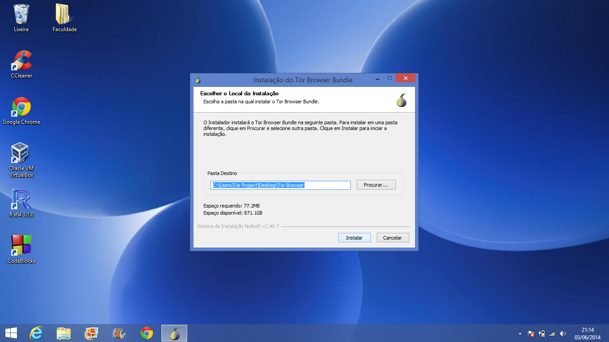
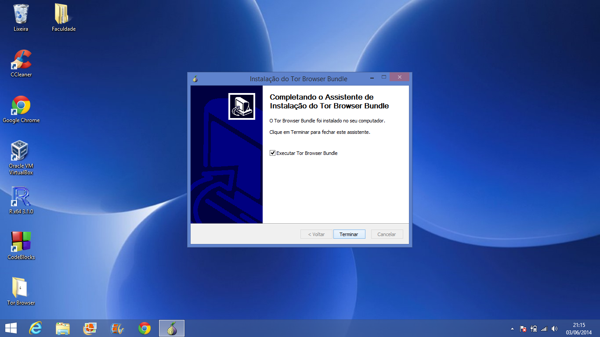
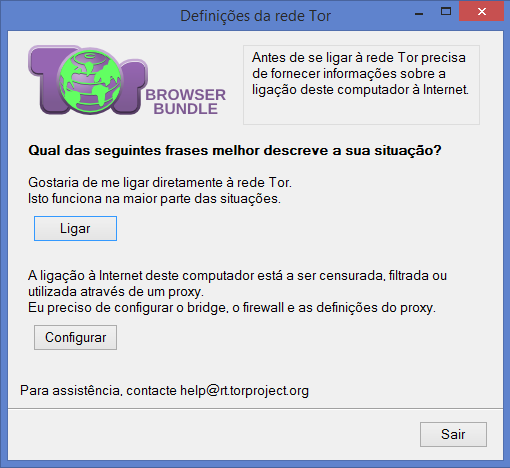
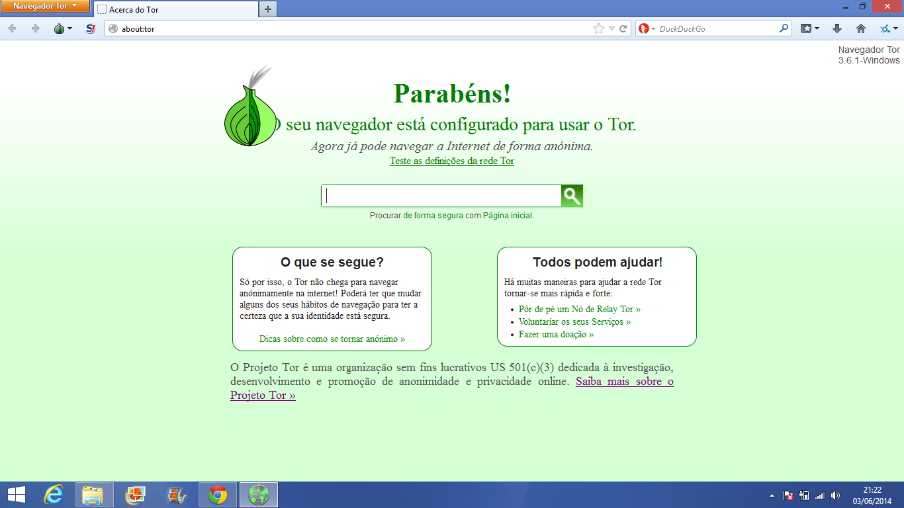

Tor no Windows(){
Dicas
Instruções para instalação do Tor no Windows
Tor é um software gratuito com o objetivo de proteção ao anonimato pessoal ao navegar na Internet.
O Tor cria um anonimato sobre a origem do seu tráfego na rede e também criptografa tudo dentro da rede Tor, porém ele não pode criptografar o tráfego entre a rede Tor e seu destino final. Se você estiver comunicando informações delicadas, você deve tomar tanto cuidado como no acesso normal a Internet.
Vamos prosseguir para a instalação:
Faça o download do Tor aqui. Vá na coluna "Microsoft Windows", escolha um idioma de sua preferência e basta esperar o download encerrar. Após ter efetuado o download, dê um duplo clique no arquivo. Clique em "Executar", escolha a linguagem do instalador e clique em OK. Certifique-se que tenha espaço livre em disco. Se você deseja deixar o pacote em seu computador, uma boa escolha é salvar na Área de Trabalho. Mas caso queira movê-lo para diferentes computadores salve-o em um dispositivo USB.
Clique em Instalar. Espere até a instalação terminar, o que pode levar alguns minutos.

Assim que a instalação estiver completa, clique em Terminar para executar o Tor Browser Bundle.

Após o arquivo abrir clique em Ligar

Uma outra alternativa, é executar o Tor Browser acessando o diretório Tor Browser que se encontra no local em que você instalou o pacote (Padrão: Área de trabalho) e dar um duplo clique na aplicação Start Tor Browser.
Uma vez que o Tor esteja pronto, o Navegador Tor será automaticamente aberto. Apenas páginas visitadas utilizando o Navegador Tor serão enviadas via Tor. Outros navegadores como Internet Explorer ou Google Chrome não são afetados.
Assim que terminar a navegação, feche qualquer janela do Navegador Tor. Por motivos de privacidade, a lista de páginas da web visitadas e quaisquer cookies serão excluídos.

Para utilizar o Tor Browser Bundle novamente, dê um duplo clique em "Start Tor Browser".
Referências:
}